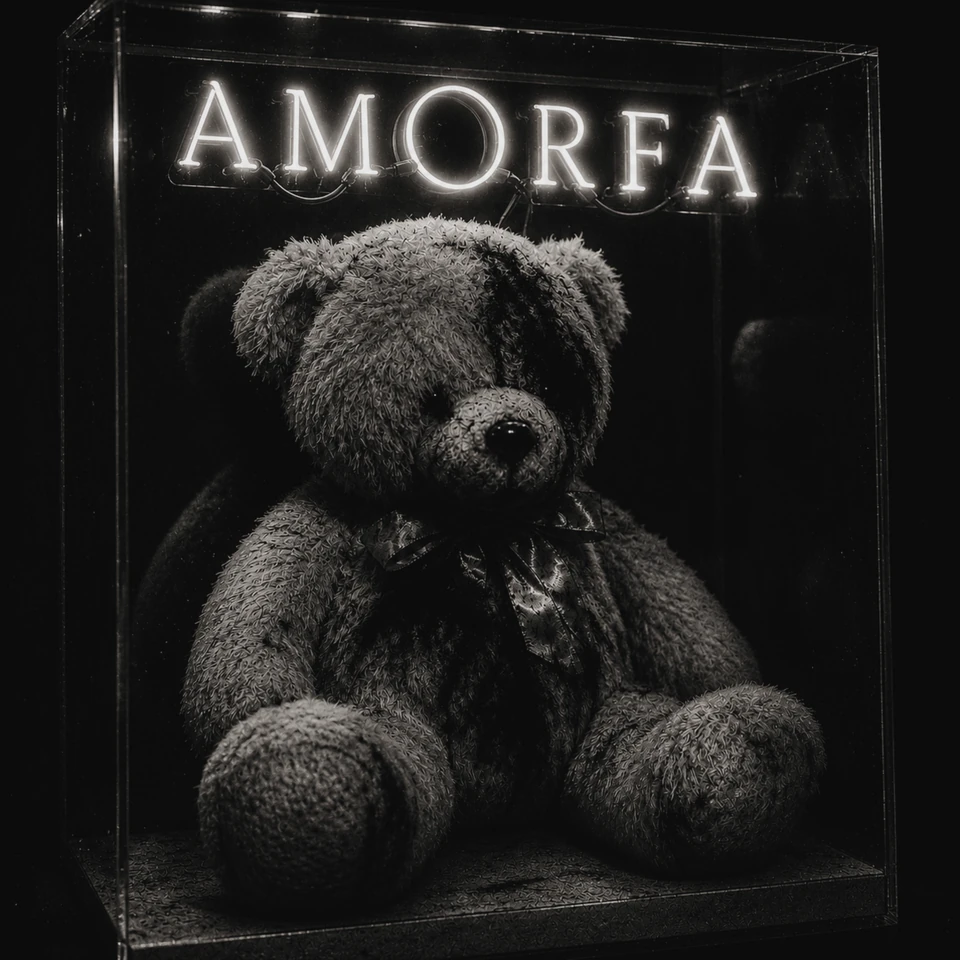

EP da AMORFA
Dia dos Namorados Macabro
O amor como produto com péssimo histórico.
Um ciclo paralelo da AMORFA sobre propaganda sentimental, romance vendido, casa assombrada e afeto devolvido sem nota fiscal. O EP atravessa a vitrine afetiva do Dia dos Namorados: buquês, posts, promessas, imóveis emocionais, assombrações domésticas e a parte do amor que não aparece na foto.
tracklist
Faixas
- 01Feliz Dia (Que Horror)
- 02Assombração de Estimação
- 03Aceito Proposta
- 04Happy Valentine's (How Ghastly)